Regional Effects (unknown black-box function)
This tutorial use the same dataset with the previous tutorial, but instead of explaining the known (synthetic) predictive function, we fit a neural network on the data and explain the neural network. This is a more realistic scenario, since in real-world applications we do not know the underlying function and we only have access to the data. We advise the reader to first read the previous tutorial.
import numpy as np
import effector
import keras
import tensorflow as tf
np.random.seed(12345)
tf.random.set_seed(12345)
2024-01-08 14:12:18.742402: I external/local_tsl/tsl/cuda/cudart_stub.cc:31] Could not find cuda drivers on your machine, GPU will not be used.
2024-01-08 14:12:18.776175: E external/local_xla/xla/stream_executor/cuda/cuda_dnn.cc:9261] Unable to register cuDNN factory: Attempting to register factory for plugin cuDNN when one has already been registered
2024-01-08 14:12:18.776228: E external/local_xla/xla/stream_executor/cuda/cuda_fft.cc:607] Unable to register cuFFT factory: Attempting to register factory for plugin cuFFT when one has already been registered
2024-01-08 14:12:18.777514: E external/local_xla/xla/stream_executor/cuda/cuda_blas.cc:1515] Unable to register cuBLAS factory: Attempting to register factory for plugin cuBLAS when one has already been registered
2024-01-08 14:12:18.784727: I external/local_tsl/tsl/cuda/cudart_stub.cc:31] Could not find cuda drivers on your machine, GPU will not be used.
2024-01-08 14:12:18.785319: I tensorflow/core/platform/cpu_feature_guard.cc:182] This TensorFlow binary is optimized to use available CPU instructions in performance-critical operations.
To enable the following instructions: AVX2 FMA, in other operations, rebuild TensorFlow with the appropriate compiler flags.
2024-01-08 14:12:19.597983: W tensorflow/compiler/tf2tensorrt/utils/py_utils.cc:38] TF-TRT Warning: Could not find TensorRT
Simulation example
Data Generating Distribution
We will generate \(N=500\) examples with \(D=3\) features, which are in the uncorrelated setting all uniformly distributed as follows:
| Feature | Description | Distribution |
|---|---|---|
| \(x_1\) | Uniformly distributed between \(-1\) and \(1\) | \(x_1 \sim \mathcal{U}(-1,1)\) |
| \(x_2\) | Uniformly distributed between \(-1\) and \(1\) | \(x_2 \sim \mathcal{U}(-1,1)\) |
| \(x_3\) | Uniformly distributed between \(-1\) and \(1\) | \(x_3 \sim \mathcal{U}(-1,1)\) |
For the correlated setting we keep the distributional assumptions for \(x_2\) and \(x_3\) but define \(x_1\) such that it is highly correlated with \(x_3\) by: \(x_1 = x_3 + \delta\) with \(\delta \sim \mathcal{N}(0,0.0625)\).
def generate_dataset_uncorrelated(N):
x1 = np.random.uniform(-1, 1, size=N)
x2 = np.random.uniform(-1, 1, size=N)
x3 = np.random.uniform(-1, 1, size=N)
return np.stack((x1, x2, x3), axis=-1)
def generate_dataset_correlated(N):
x3 = np.random.uniform(-1, 1, size=N)
x2 = np.random.uniform(-1, 1, size=N)
x1 = x3 + np.random.normal(loc = np.zeros_like(x3), scale = 0.25)
return np.stack((x1, x2, x3), axis=-1)
# generate the dataset for the uncorrelated and correlated setting
N = 1000
X_uncor_train = generate_dataset_uncorrelated(N)
X_uncor_test = generate_dataset_uncorrelated(10000)
X_cor_train = generate_dataset_correlated(N)
X_cor_test = generate_dataset_correlated(10000)
Black-box function
We will use the following linear model with a subgroup-specific interaction term: $$ y = 3x_1I_{x_3>0} - 3x_1I_{x_3\leq0} + x_3$$
On a global level, there is a high heterogeneity for the features \(x_1\) and \(x_3\) due to their interaction with each other. However, this heterogeneity vanishes to 0 if the feature space is separated into subregions:
| Feature | Region | Average Effect | Heterogeneity |
|---|---|---|---|
| \(x_1\) | \(x_3>0\) | \(3x_1\) | 0 |
| \(x_1\) | \(x_3\leq 0\) | \(-3x_1\) | 0 |
| \(x_2\) | all | 0 | 0 |
| \(x_3\) | \(x_3>0\) | \(x_3\) | 0 |
| \(x_3\) | \(x_3\leq 0\) | \(x_3\) | 0 |
def generate_target(X):
f = np.where(X[:,2] > 0, 3*X[:,0] + X[:,2], -3*X[:,0] + X[:,2])
epsilon = np.random.normal(loc = np.zeros_like(X[:,0]), scale = 0.1)
Y = f + epsilon
return(Y)
# generate target for uncorrelated and correlated setting
Y_uncor_train = generate_target(X_uncor_train)
Y_uncor_test = generate_target(X_uncor_test)
Y_cor_train = generate_target(X_cor_train)
Y_cor_test = generate_target(X_cor_test)
Fit a Neural Network
We create a two-layer feedforward Neural Network, a weight decay of 0.01 for 100 epochs. We train two instances of this NN, one on the uncorrelated and one on the correlated setting. In both cases, the NN achieves a Mean Squared Error of about \(0.17\) units.
# Train - Evaluate - Explain a neural network
model_uncor = keras.Sequential([
keras.layers.Dense(10, activation="relu", input_shape=(3,)),
keras.layers.Dense(10, activation="relu", input_shape=(3,)),
keras.layers.Dense(1)
])
optimizer = keras.optimizers.Adam(learning_rate=0.01)
model_uncor.compile(optimizer=optimizer, loss="mse")
model_uncor.fit(X_uncor_train, Y_uncor_train, epochs=100)
model_uncor.evaluate(X_uncor_test, Y_uncor_test)
Epoch 1/100
2024-01-08 14:12:20.220663: E external/local_xla/xla/stream_executor/cuda/cuda_driver.cc:274] failed call to cuInit: CUDA_ERROR_NO_DEVICE: no CUDA-capable device is detected
32/32 [==============================] - 0s 891us/step - loss: 2.4907
Epoch 2/100
32/32 [==============================] - 0s 791us/step - loss: 0.8437
Epoch 3/100
32/32 [==============================] - 0s 792us/step - loss: 0.5186
Epoch 4/100
32/32 [==============================] - 0s 761us/step - loss: 0.3794
Epoch 5/100
32/32 [==============================] - 0s 764us/step - loss: 0.2954
Epoch 6/100
32/32 [==============================] - 0s 812us/step - loss: 0.2609
Epoch 7/100
32/32 [==============================] - 0s 852us/step - loss: 0.2211
Epoch 8/100
32/32 [==============================] - 0s 777us/step - loss: 0.1949
Epoch 9/100
32/32 [==============================] - 0s 758us/step - loss: 0.1847
Epoch 10/100
32/32 [==============================] - 0s 780us/step - loss: 0.2012
Epoch 11/100
32/32 [==============================] - 0s 845us/step - loss: 0.1805
Epoch 12/100
32/32 [==============================] - 0s 823us/step - loss: 0.1663
Epoch 13/100
32/32 [==============================] - 0s 786us/step - loss: 0.1980
Epoch 14/100
32/32 [==============================] - 0s 766us/step - loss: 0.1649
Epoch 15/100
32/32 [==============================] - 0s 762us/step - loss: 0.1340
Epoch 16/100
32/32 [==============================] - 0s 765us/step - loss: 0.1337
Epoch 17/100
32/32 [==============================] - 0s 743us/step - loss: 0.1661
Epoch 18/100
32/32 [==============================] - 0s 717us/step - loss: 0.1326
Epoch 19/100
32/32 [==============================] - 0s 751us/step - loss: 0.1386
Epoch 20/100
32/32 [==============================] - 0s 898us/step - loss: 0.1447
Epoch 21/100
32/32 [==============================] - 0s 756us/step - loss: 0.1212
Epoch 22/100
32/32 [==============================] - 0s 737us/step - loss: 0.1406
Epoch 23/100
32/32 [==============================] - 0s 731us/step - loss: 0.1160
Epoch 24/100
32/32 [==============================] - 0s 739us/step - loss: 0.1454
Epoch 25/100
32/32 [==============================] - 0s 727us/step - loss: 0.1220
Epoch 26/100
32/32 [==============================] - 0s 748us/step - loss: 0.1124
Epoch 27/100
32/32 [==============================] - 0s 751us/step - loss: 0.1195
Epoch 28/100
32/32 [==============================] - 0s 742us/step - loss: 0.1236
Epoch 29/100
32/32 [==============================] - 0s 753us/step - loss: 0.1169
Epoch 30/100
32/32 [==============================] - 0s 754us/step - loss: 0.0987
Epoch 31/100
32/32 [==============================] - 0s 751us/step - loss: 0.0964
Epoch 32/100
32/32 [==============================] - 0s 772us/step - loss: 0.1026
Epoch 33/100
32/32 [==============================] - 0s 749us/step - loss: 0.1159
Epoch 34/100
32/32 [==============================] - 0s 756us/step - loss: 0.1041
Epoch 35/100
32/32 [==============================] - 0s 744us/step - loss: 0.1432
Epoch 36/100
32/32 [==============================] - 0s 735us/step - loss: 0.1284
Epoch 37/100
32/32 [==============================] - 0s 756us/step - loss: 0.1035
Epoch 38/100
32/32 [==============================] - 0s 731us/step - loss: 0.0984
Epoch 39/100
32/32 [==============================] - 0s 735us/step - loss: 0.1099
Epoch 40/100
32/32 [==============================] - 0s 762us/step - loss: 0.0957
Epoch 41/100
32/32 [==============================] - 0s 739us/step - loss: 0.0974
Epoch 42/100
32/32 [==============================] - 0s 726us/step - loss: 0.0954
Epoch 43/100
32/32 [==============================] - 0s 741us/step - loss: 0.0915
Epoch 44/100
32/32 [==============================] - 0s 751us/step - loss: 0.0961
Epoch 45/100
32/32 [==============================] - 0s 734us/step - loss: 0.1016
Epoch 46/100
32/32 [==============================] - 0s 726us/step - loss: 0.0962
Epoch 47/100
32/32 [==============================] - 0s 723us/step - loss: 0.0918
Epoch 48/100
32/32 [==============================] - 0s 743us/step - loss: 0.0980
Epoch 49/100
32/32 [==============================] - 0s 742us/step - loss: 0.1181
Epoch 50/100
32/32 [==============================] - 0s 753us/step - loss: 0.0937
Epoch 51/100
32/32 [==============================] - 0s 772us/step - loss: 0.0934
Epoch 52/100
32/32 [==============================] - 0s 807us/step - loss: 0.0810
Epoch 53/100
32/32 [==============================] - 0s 766us/step - loss: 0.0965
Epoch 54/100
32/32 [==============================] - 0s 732us/step - loss: 0.0959
Epoch 55/100
32/32 [==============================] - 0s 759us/step - loss: 0.0760
Epoch 56/100
32/32 [==============================] - 0s 788us/step - loss: 0.0959
Epoch 57/100
32/32 [==============================] - 0s 1ms/step - loss: 0.0865
Epoch 58/100
32/32 [==============================] - 0s 991us/step - loss: 0.1034
Epoch 59/100
32/32 [==============================] - 0s 1ms/step - loss: 0.0995
Epoch 60/100
32/32 [==============================] - 0s 790us/step - loss: 0.1211
Epoch 61/100
32/32 [==============================] - 0s 845us/step - loss: 0.0783
Epoch 62/100
32/32 [==============================] - 0s 803us/step - loss: 0.0759
Epoch 63/100
32/32 [==============================] - 0s 800us/step - loss: 0.0879
Epoch 64/100
32/32 [==============================] - 0s 830us/step - loss: 0.0796
Epoch 65/100
32/32 [==============================] - 0s 822us/step - loss: 0.0804
Epoch 66/100
32/32 [==============================] - 0s 825us/step - loss: 0.0807
Epoch 67/100
32/32 [==============================] - 0s 752us/step - loss: 0.0741
Epoch 68/100
32/32 [==============================] - 0s 943us/step - loss: 0.0786
Epoch 69/100
32/32 [==============================] - 0s 767us/step - loss: 0.0860
Epoch 70/100
32/32 [==============================] - 0s 787us/step - loss: 0.0822
Epoch 71/100
32/32 [==============================] - 0s 792us/step - loss: 0.0747
Epoch 72/100
32/32 [==============================] - 0s 843us/step - loss: 0.0927
Epoch 73/100
32/32 [==============================] - 0s 835us/step - loss: 0.1242
Epoch 74/100
32/32 [==============================] - 0s 828us/step - loss: 0.1386
Epoch 75/100
32/32 [==============================] - 0s 762us/step - loss: 0.1029
Epoch 76/100
32/32 [==============================] - 0s 840us/step - loss: 0.0873
Epoch 77/100
32/32 [==============================] - 0s 1ms/step - loss: 0.0866
Epoch 78/100
32/32 [==============================] - 0s 804us/step - loss: 0.0747
Epoch 79/100
32/32 [==============================] - 0s 821us/step - loss: 0.0761
Epoch 80/100
32/32 [==============================] - 0s 865us/step - loss: 0.0700
Epoch 81/100
32/32 [==============================] - 0s 857us/step - loss: 0.0852
Epoch 82/100
32/32 [==============================] - 0s 896us/step - loss: 0.0893
Epoch 83/100
32/32 [==============================] - 0s 942us/step - loss: 0.0639
Epoch 84/100
32/32 [==============================] - 0s 1ms/step - loss: 0.0904
Epoch 85/100
32/32 [==============================] - 0s 847us/step - loss: 0.0718
Epoch 86/100
32/32 [==============================] - 0s 872us/step - loss: 0.1000
Epoch 87/100
32/32 [==============================] - 0s 1ms/step - loss: 0.0802
Epoch 88/100
32/32 [==============================] - 0s 1ms/step - loss: 0.0724
Epoch 89/100
32/32 [==============================] - 0s 1ms/step - loss: 0.0723
Epoch 90/100
32/32 [==============================] - 0s 1ms/step - loss: 0.0649
Epoch 91/100
32/32 [==============================] - 0s 947us/step - loss: 0.0633
Epoch 92/100
32/32 [==============================] - 0s 1ms/step - loss: 0.0752
Epoch 93/100
32/32 [==============================] - 0s 900us/step - loss: 0.0855
Epoch 94/100
32/32 [==============================] - 0s 957us/step - loss: 0.0737
Epoch 95/100
32/32 [==============================] - 0s 924us/step - loss: 0.0627
Epoch 96/100
32/32 [==============================] - 0s 915us/step - loss: 0.0958
Epoch 97/100
32/32 [==============================] - 0s 821us/step - loss: 0.0704
Epoch 98/100
32/32 [==============================] - 0s 872us/step - loss: 0.0679
Epoch 99/100
32/32 [==============================] - 0s 1ms/step - loss: 0.1009
Epoch 100/100
32/32 [==============================] - 0s 1ms/step - loss: 0.0669
313/313 [==============================] - 0s 674us/step - loss: 0.0735
0.07348253577947617
model_cor = keras.Sequential([
keras.layers.Dense(10, activation="relu", input_shape=(3,)),
keras.layers.Dense(10, activation="relu", input_shape=(3,)),
keras.layers.Dense(1)
])
optimizer = keras.optimizers.Adam(learning_rate=0.01)
model_cor.compile(optimizer=optimizer, loss="mse")
model_cor.fit(X_cor_train, Y_cor_train, epochs=100)
model_cor.evaluate(X_cor_test, Y_cor_test)
Epoch 1/100
32/32 [==============================] - 0s 781us/step - loss: 0.6460
Epoch 2/100
32/32 [==============================] - 0s 751us/step - loss: 0.1858
Epoch 3/100
32/32 [==============================] - 0s 745us/step - loss: 0.1112
Epoch 4/100
32/32 [==============================] - 0s 712us/step - loss: 0.0832
Epoch 5/100
32/32 [==============================] - 0s 716us/step - loss: 0.0742
Epoch 6/100
32/32 [==============================] - 0s 703us/step - loss: 0.0716
Epoch 7/100
32/32 [==============================] - 0s 726us/step - loss: 0.0695
Epoch 8/100
32/32 [==============================] - 0s 772us/step - loss: 0.0629
Epoch 9/100
32/32 [==============================] - 0s 744us/step - loss: 0.0614
Epoch 10/100
32/32 [==============================] - 0s 779us/step - loss: 0.0578
Epoch 11/100
32/32 [==============================] - 0s 772us/step - loss: 0.0564
Epoch 12/100
32/32 [==============================] - 0s 778us/step - loss: 0.0529
Epoch 13/100
32/32 [==============================] - 0s 833us/step - loss: 0.0532
Epoch 14/100
32/32 [==============================] - 0s 948us/step - loss: 0.0480
Epoch 15/100
32/32 [==============================] - 0s 794us/step - loss: 0.0482
Epoch 16/100
32/32 [==============================] - 0s 767us/step - loss: 0.0462
Epoch 17/100
32/32 [==============================] - 0s 794us/step - loss: 0.0422
Epoch 18/100
32/32 [==============================] - 0s 818us/step - loss: 0.0411
Epoch 19/100
32/32 [==============================] - 0s 857us/step - loss: 0.0416
Epoch 20/100
32/32 [==============================] - 0s 933us/step - loss: 0.0394
Epoch 21/100
32/32 [==============================] - 0s 822us/step - loss: 0.0403
Epoch 22/100
32/32 [==============================] - 0s 814us/step - loss: 0.0378
Epoch 23/100
32/32 [==============================] - 0s 800us/step - loss: 0.0366
Epoch 24/100
32/32 [==============================] - 0s 787us/step - loss: 0.0352
Epoch 25/100
32/32 [==============================] - 0s 751us/step - loss: 0.0450
Epoch 26/100
32/32 [==============================] - 0s 780us/step - loss: 0.0431
Epoch 27/100
32/32 [==============================] - 0s 774us/step - loss: 0.0345
Epoch 28/100
32/32 [==============================] - 0s 754us/step - loss: 0.0348
Epoch 29/100
32/32 [==============================] - 0s 751us/step - loss: 0.0334
Epoch 30/100
32/32 [==============================] - 0s 830us/step - loss: 0.0372
Epoch 31/100
32/32 [==============================] - 0s 919us/step - loss: 0.0347
Epoch 32/100
32/32 [==============================] - 0s 1ms/step - loss: 0.0322
Epoch 33/100
32/32 [==============================] - 0s 892us/step - loss: 0.0319
Epoch 34/100
32/32 [==============================] - 0s 913us/step - loss: 0.0350
Epoch 35/100
32/32 [==============================] - 0s 959us/step - loss: 0.0325
Epoch 36/100
32/32 [==============================] - 0s 913us/step - loss: 0.0303
Epoch 37/100
32/32 [==============================] - 0s 973us/step - loss: 0.0293
Epoch 38/100
32/32 [==============================] - 0s 946us/step - loss: 0.0339
Epoch 39/100
32/32 [==============================] - 0s 909us/step - loss: 0.0289
Epoch 40/100
32/32 [==============================] - 0s 995us/step - loss: 0.0303
Epoch 41/100
32/32 [==============================] - 0s 1ms/step - loss: 0.0297
Epoch 42/100
32/32 [==============================] - 0s 1ms/step - loss: 0.0302
Epoch 43/100
32/32 [==============================] - 0s 1ms/step - loss: 0.0258
Epoch 44/100
32/32 [==============================] - 0s 795us/step - loss: 0.0304
Epoch 45/100
32/32 [==============================] - 0s 803us/step - loss: 0.0279
Epoch 46/100
32/32 [==============================] - 0s 815us/step - loss: 0.0307
Epoch 47/100
32/32 [==============================] - 0s 782us/step - loss: 0.0251
Epoch 48/100
32/32 [==============================] - 0s 835us/step - loss: 0.0289
Epoch 49/100
32/32 [==============================] - 0s 896us/step - loss: 0.0305
Epoch 50/100
32/32 [==============================] - 0s 932us/step - loss: 0.0265
Epoch 51/100
32/32 [==============================] - 0s 954us/step - loss: 0.0257
Epoch 52/100
32/32 [==============================] - 0s 931us/step - loss: 0.0284
Epoch 53/100
32/32 [==============================] - 0s 871us/step - loss: 0.0260
Epoch 54/100
32/32 [==============================] - 0s 1ms/step - loss: 0.0273
Epoch 55/100
32/32 [==============================] - 0s 852us/step - loss: 0.0268
Epoch 56/100
32/32 [==============================] - 0s 846us/step - loss: 0.0267
Epoch 57/100
32/32 [==============================] - 0s 776us/step - loss: 0.0256
Epoch 58/100
32/32 [==============================] - 0s 807us/step - loss: 0.0262
Epoch 59/100
32/32 [==============================] - 0s 796us/step - loss: 0.0395
Epoch 60/100
32/32 [==============================] - 0s 884us/step - loss: 0.0253
Epoch 61/100
32/32 [==============================] - 0s 961us/step - loss: 0.0251
Epoch 62/100
32/32 [==============================] - 0s 790us/step - loss: 0.0250
Epoch 63/100
32/32 [==============================] - 0s 798us/step - loss: 0.0239
Epoch 64/100
32/32 [==============================] - 0s 793us/step - loss: 0.0257
Epoch 65/100
32/32 [==============================] - 0s 841us/step - loss: 0.0241
Epoch 66/100
32/32 [==============================] - 0s 799us/step - loss: 0.0290
Epoch 67/100
32/32 [==============================] - 0s 850us/step - loss: 0.0225
Epoch 68/100
32/32 [==============================] - 0s 790us/step - loss: 0.0225
Epoch 69/100
32/32 [==============================] - 0s 829us/step - loss: 0.0248
Epoch 70/100
32/32 [==============================] - 0s 810us/step - loss: 0.0245
Epoch 71/100
32/32 [==============================] - 0s 796us/step - loss: 0.0249
Epoch 72/100
32/32 [==============================] - 0s 807us/step - loss: 0.0258
Epoch 73/100
32/32 [==============================] - 0s 800us/step - loss: 0.0231
Epoch 74/100
32/32 [==============================] - 0s 856us/step - loss: 0.0242
Epoch 75/100
32/32 [==============================] - 0s 896us/step - loss: 0.0230
Epoch 76/100
32/32 [==============================] - 0s 880us/step - loss: 0.0292
Epoch 77/100
32/32 [==============================] - 0s 886us/step - loss: 0.0239
Epoch 78/100
32/32 [==============================] - 0s 826us/step - loss: 0.0235
Epoch 79/100
32/32 [==============================] - 0s 802us/step - loss: 0.0251
Epoch 80/100
32/32 [==============================] - 0s 740us/step - loss: 0.0243
Epoch 81/100
32/32 [==============================] - 0s 749us/step - loss: 0.0269
Epoch 82/100
32/32 [==============================] - 0s 892us/step - loss: 0.0272
Epoch 83/100
32/32 [==============================] - 0s 798us/step - loss: 0.0226
Epoch 84/100
32/32 [==============================] - 0s 765us/step - loss: 0.0241
Epoch 85/100
32/32 [==============================] - 0s 765us/step - loss: 0.0277
Epoch 86/100
32/32 [==============================] - 0s 753us/step - loss: 0.0232
Epoch 87/100
32/32 [==============================] - 0s 763us/step - loss: 0.0238
Epoch 88/100
32/32 [==============================] - 0s 828us/step - loss: 0.0210
Epoch 89/100
32/32 [==============================] - 0s 781us/step - loss: 0.0228
Epoch 90/100
32/32 [==============================] - 0s 763us/step - loss: 0.0232
Epoch 91/100
32/32 [==============================] - 0s 769us/step - loss: 0.0214
Epoch 92/100
32/32 [==============================] - 0s 753us/step - loss: 0.0204
Epoch 93/100
32/32 [==============================] - 0s 711us/step - loss: 0.0352
Epoch 94/100
32/32 [==============================] - 0s 718us/step - loss: 0.0225
Epoch 95/100
32/32 [==============================] - 0s 745us/step - loss: 0.0209
Epoch 96/100
32/32 [==============================] - 0s 750us/step - loss: 0.0253
Epoch 97/100
32/32 [==============================] - 0s 845us/step - loss: 0.0244
Epoch 98/100
32/32 [==============================] - 0s 813us/step - loss: 0.0289
Epoch 99/100
32/32 [==============================] - 0s 805us/step - loss: 0.0221
Epoch 100/100
32/32 [==============================] - 0s 764us/step - loss: 0.0239
313/313 [==============================] - 0s 740us/step - loss: 0.0282
0.02815949358046055
PDP
Uncorrelated setting
Global PDP
pdp = effector.PDP(data=X_uncor_train, model=model_uncor, feature_names=['x1','x2','x3'], target_name="Y")
pdp.plot(feature=0, centering=True, show_avg_output=False, heterogeneity="ice", y_limits=[-5, 5])
pdp.plot(feature=1, centering=True, show_avg_output=False, heterogeneity="ice", y_limits=[-5, 5])
pdp.plot(feature=2, centering=True, show_avg_output=False, heterogeneity="ice", y_limits=[-5, 5])
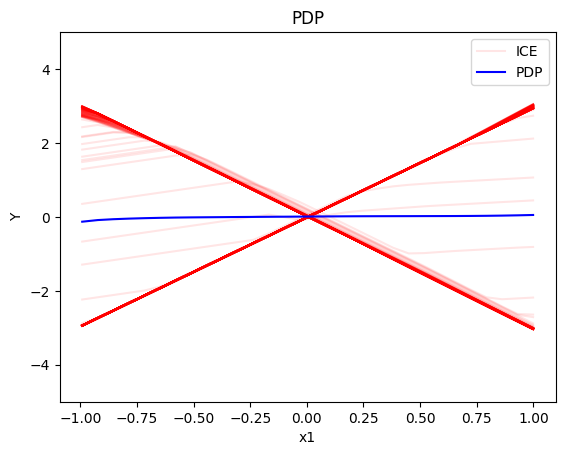
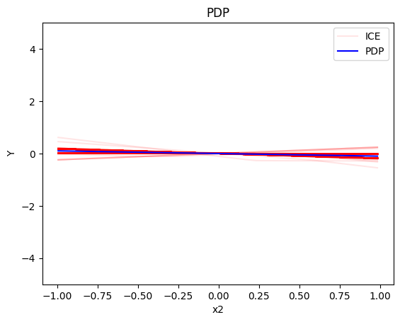
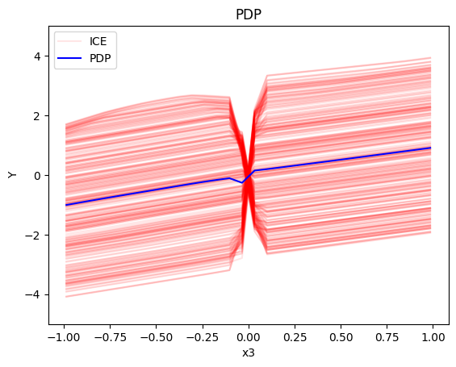
Regional PDP
regional_pdp = effector.RegionalPDP(data=X_uncor_train, model=model_uncor, feature_names=['x1','x2','x3'], axis_limits=np.array([[-1,1],[-1,1],[-1,1]]).T)
regional_pdp.fit(features="all", heter_pcg_drop_thres=0.3, nof_candidate_splits_for_numerical=11)
100%|██████████| 3/3 [00:01<00:00, 2.12it/s]
regional_pdp.show_partitioning(features=0)
Feature 0 - Full partition tree:
Node id: 0, name: x1, heter: 1.71 || nof_instances: 1000 || weight: 1.00
Node id: 1, name: x1 | x3 <= -0.0, heter: 0.35 || nof_instances: 498 || weight: 0.50
Node id: 2, name: x1 | x3 > -0.0, heter: 0.35 || nof_instances: 502 || weight: 0.50
--------------------------------------------------
Feature 0 - Statistics per tree level:
Level 0, heter: 1.71
Level 1, heter: 0.35 || heter drop: 1.36 (79.49%)
regional_pdp.plot(feature=0, node_idx=1, heterogeneity="ice", y_limits=[-5, 5])
regional_pdp.plot(feature=0, node_idx=2, heterogeneity="ice", y_limits=[-5, 5])
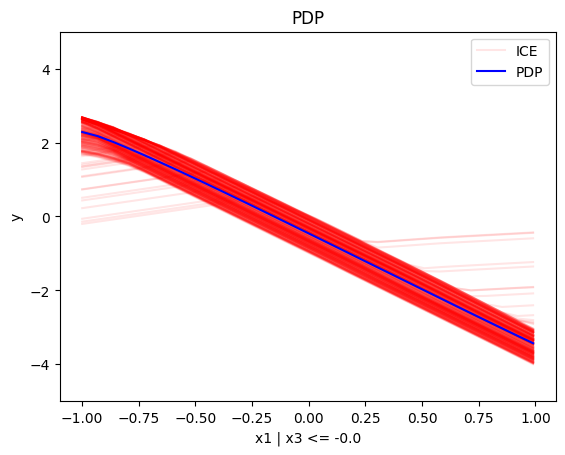
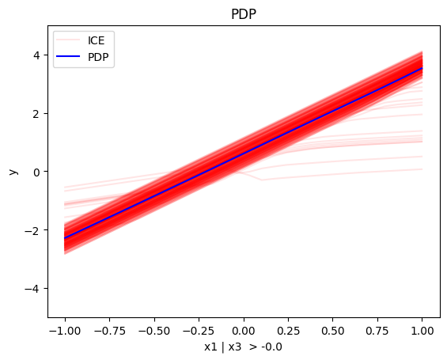
regional_pdp.show_partitioning(features=1)
Feature 1 - Full partition tree:
Node id: 0, name: x2, heter: 1.81 || nof_instances: 1000 || weight: 1.00
--------------------------------------------------
Feature 1 - Statistics per tree level:
Level 0, heter: 1.81
regional_pdp.show_partitioning(features=2)
Feature 2 - Full partition tree:
Node id: 0, name: x3, heter: 1.72 || nof_instances: 1000 || weight: 1.00
Node id: 1, name: x3 | x1 <= -0.0, heter: 0.84 || nof_instances: 494 || weight: 0.49
Node id: 2, name: x3 | x1 > -0.0, heter: 0.87 || nof_instances: 506 || weight: 0.51
--------------------------------------------------
Feature 2 - Statistics per tree level:
Level 0, heter: 1.72
Level 1, heter: 0.85 || heter drop: 0.86 (50.17%)
regional_pdp.plot(feature=2, node_idx=1, heterogeneity="ice", centering=True, y_limits=[-5, 5])
regional_pdp.plot(feature=2, node_idx=2, heterogeneity="ice", centering=True, y_limits=[-5, 5])
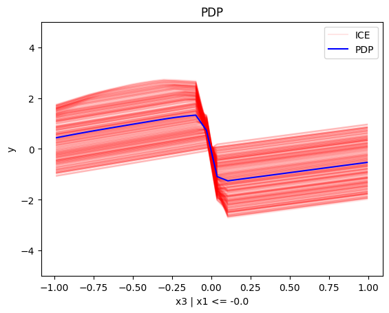
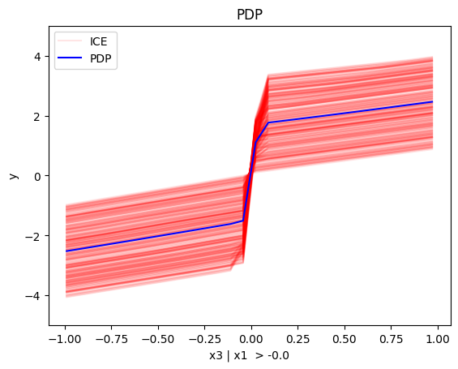
Conclusion
For the Global PDP:
- the average effect of \(x_1\) is \(0\) with some heterogeneity implied by the interaction with \(x_1\). The heterogeneity is expressed with two opposite lines; \(-3x_1\) when \(x_1 \leq 0\) and \(3x_1\) when \(x_1 >0\)
- the average effect of \(x_2\) to be \(0\) without heterogeneity
- the average effect of \(x_3\) to be \(x_3\) with some heterogeneity due to the interaction with \(x_1\). The heterogeneity is expressed with a discontinuity around \(x_3=0\), with either a positive or a negative offset depending on the value of \(x_1^i\)
For the Regional PDP:
- For \(x_1\), the algorithm finds two regions, one for \(x_3 \leq 0\) and one for \(x_3 > 0\)
- when \(x_3>0\) the effect is \(3x_1\)
- when \(x_3 \leq 0\), the effect is \(-3x_1\)
- For \(x_2\) the algorithm does not find any subregion
- For \(x_3\), there is a change in the offset:
- when \(x_1>0\) the line is \(x_3 - 3x_1^i\) in the first half and \(x_3 + 3x_1^i\) later
- when \(x_1<0\) the line is \(x_3 + 3x_1^i\) in the first half and \(x_3 - 3x_1^i\) later
Correlated setting
Global PDP
pdp = effector.PDP(data=X_cor_train, model=model_cor, feature_names=['x1','x2','x3'], target_name="Y")
pdp.plot(feature=0, centering=True, show_avg_output=False, heterogeneity="ice", y_limits=[-5, 5])
pdp.plot(feature=1, centering=True, show_avg_output=False, heterogeneity="ice", y_limits=[-5, 5])
pdp.plot(feature=2, centering=True, show_avg_output=False, heterogeneity="ice", y_limits=[-5, 5])
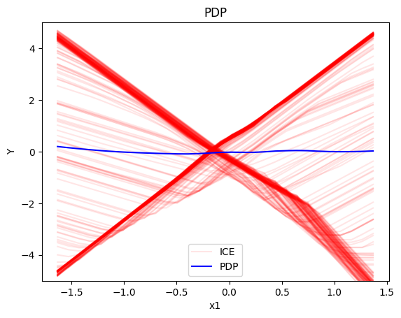
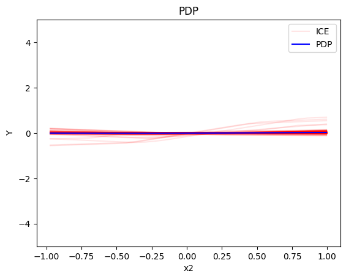
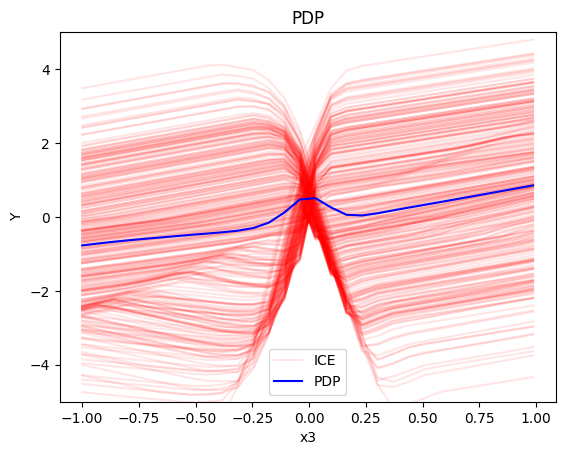
Regional-PDP
regional_pdp = effector.RegionalPDP(data=X_cor_train, model=model_cor, feature_names=['x1','x2','x3'], axis_limits=np.array([[-1,1],[-1,1],[-1,1]]).T)
regional_pdp.fit(features="all", heter_pcg_drop_thres=0.4, nof_candidate_splits_for_numerical=11)
100%|██████████| 3/3 [00:01<00:00, 2.16it/s]
regional_pdp.show_partitioning(features=0)
Feature 0 - Full partition tree:
Node id: 0, name: x1, heter: 2.39 || nof_instances: 1000 || weight: 1.00
Node id: 1, name: x1 | x3 <= -0.0, heter: 0.36 || nof_instances: 491 || weight: 0.49
Node id: 2, name: x1 | x3 > -0.0, heter: 0.40 || nof_instances: 509 || weight: 0.51
--------------------------------------------------
Feature 0 - Statistics per tree level:
Level 0, heter: 2.39
Level 1, heter: 0.38 || heter drop: 2.01 (84.19%)
regional_pdp.plot(feature=0, node_idx=1, heterogeneity="ice", centering=True, y_limits=[-5, 5])
regional_pdp.plot(feature=0, node_idx=2, heterogeneity="ice", centering=True, y_limits=[-5, 5])
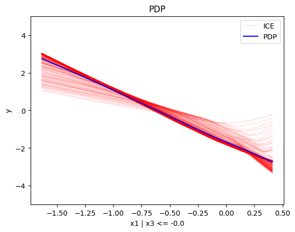
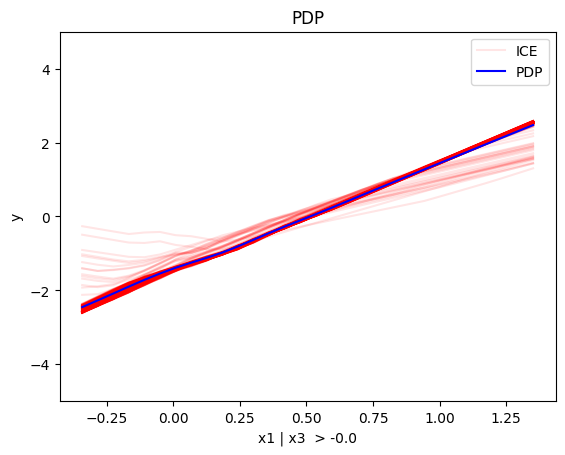
regional_pdp.show_partitioning(features=1)
Feature 1 - Full partition tree:
Node id: 0, name: x2, heter: 1.24 || nof_instances: 1000 || weight: 1.00
--------------------------------------------------
Feature 1 - Statistics per tree level:
Level 0, heter: 1.24
regional_pdp.show_partitioning(features=2)
Feature 2 - Full partition tree:
Node id: 0, name: x3, heter: 1.81 || nof_instances: 1000 || weight: 1.00
Node id: 1, name: x3 | x1 <= 0.14, heter: 1.03 || nof_instances: 576 || weight: 0.58
Node id: 2, name: x3 | x1 > 0.14, heter: 0.91 || nof_instances: 424 || weight: 0.42
--------------------------------------------------
Feature 2 - Statistics per tree level:
Level 0, heter: 1.81
Level 1, heter: 0.98 || heter drop: 0.83 (45.84%)
regional_pdp.plot(feature=2, node_idx=1, heterogeneity="ice", centering=True, y_limits=[-5, 5])
regional_pdp.plot(feature=2, node_idx=2, heterogeneity="ice", centering=True, y_limits=[-5, 5])
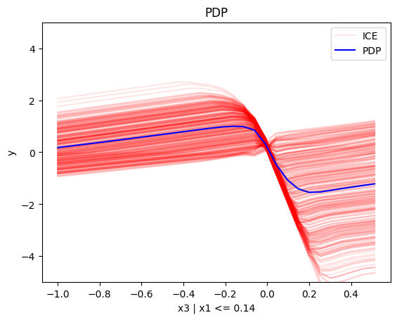
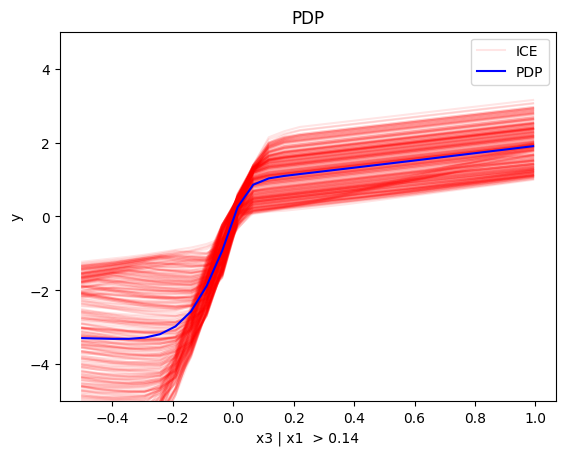
Conclusion
(RH)ALE
def model_uncor_jac(x):
x_tensor = tf.convert_to_tensor(x, dtype=tf.float32)
with tf.GradientTape() as t:
t.watch(x_tensor)
pred = model_uncor(x_tensor)
grads = t.gradient(pred, x_tensor)
return grads.numpy()
def model_cor_jac(x):
x_tensor = tf.convert_to_tensor(x, dtype=tf.float32)
with tf.GradientTape() as t:
t.watch(x_tensor)
pred = model_cor(x_tensor)
grads = t.gradient(pred, x_tensor)
return grads.numpy()
Uncorrelated setting
Global RHALE
rhale = effector.RHALE(data=X_uncor_train, model=model_uncor, model_jac=model_uncor_jac, feature_names=['x1','x2','x3'], target_name="Y")
binning_method = effector.binning_methods.Fixed(10, min_points_per_bin=0)
rhale.fit(features="all", binning_method=binning_method, centering=True)
rhale.plot(feature=0, centering=True, heterogeneity="std", show_avg_output=False, y_limits=[-5, 5], dy_limits=[-5, 5])
rhale.plot(feature=1, centering=True, heterogeneity="std", show_avg_output=False, y_limits=[-5, 5], dy_limits=[-5, 5])
rhale.plot(feature=2, centering=True, heterogeneity="std", show_avg_output=False, y_limits=[-5, 5], dy_limits=[-5, 5])
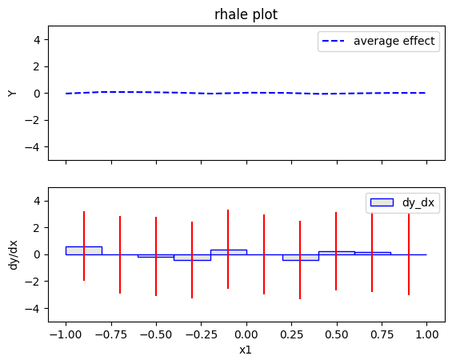
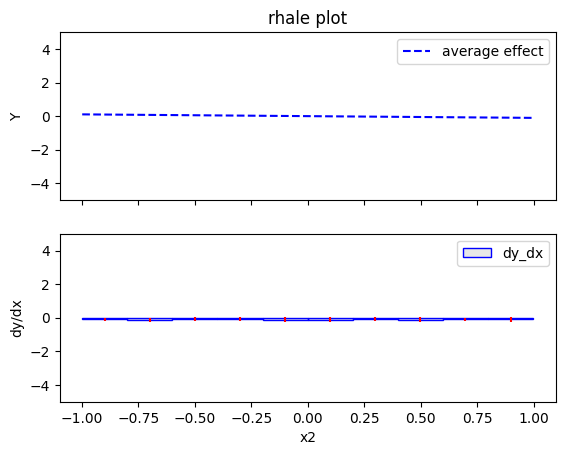
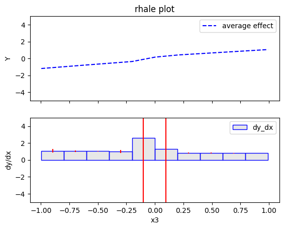
Regional RHALE
regional_rhale = effector.RegionalRHALE(
data=X_uncor_train,
model=model_uncor,
model_jac= model_uncor_jac,
feature_names=['x1', 'x2', 'x3'],
axis_limits=np.array([[-1, 1], [-1, 1], [-1, 1]]).T)
binning_method = effector.binning_methods.Fixed(11, min_points_per_bin=0)
regional_rhale.fit(
features="all",
heter_pcg_drop_thres=0.6,
binning_method=binning_method,
nof_candidate_splits_for_numerical=11
)
100%|██████████| 3/3 [00:00<00:00, 3.72it/s]
regional_rhale.show_partitioning(features=0)
Feature 0 - Full partition tree:
Node id: 0, name: x1, heter: 5.81 || nof_instances: 1000 || weight: 1.00
Node id: 1, name: x1 | x3 <= -0.0, heter: 0.95 || nof_instances: 498 || weight: 0.50
Node id: 2, name: x1 | x3 > -0.0, heter: 0.77 || nof_instances: 502 || weight: 0.50
--------------------------------------------------
Feature 0 - Statistics per tree level:
Level 0, heter: 5.81
Level 1, heter: 0.86 || heter drop: 4.95 (85.21%)
regional_rhale.plot(feature=0, node_idx=1, heterogeneity="std", centering=True, y_limits=[-5, 5])
regional_rhale.plot(feature=0, node_idx=2, heterogeneity="std", centering=True, y_limits=[-5, 5])
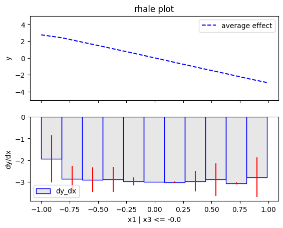
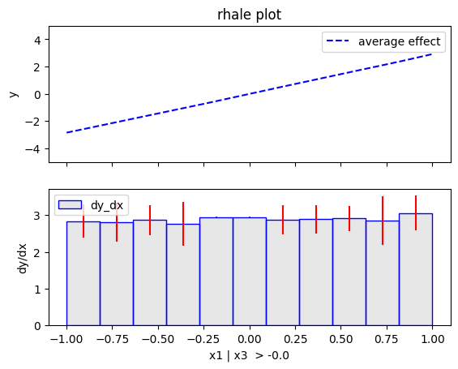
regional_rhale.show_partitioning(features=1)
Feature 1 - Full partition tree:
Node id: 0, name: x2, heter: 0.23 || nof_instances: 1000 || weight: 1.00
--------------------------------------------------
Feature 1 - Statistics per tree level:
Level 0, heter: 0.23
regional_rhale.show_partitioning(features=2)
Feature 2 - Full partition tree:
Node id: 0, name: x3, heter: 5.48 || nof_instances: 1000 || weight: 1.00
--------------------------------------------------
Feature 2 - Statistics per tree level:
Level 0, heter: 5.48
Conclusion
Correlated setting
Global RHALE
rhale = effector.RHALE(data=X_cor_train, model=model_cor, model_jac=model_cor_jac, feature_names=['x1','x2','x3'], target_name="Y")
binning_method = effector.binning_methods.Fixed(10, min_points_per_bin=0)
rhale.fit(features="all", binning_method=binning_method, centering=True)
rhale.plot(feature=0, centering=True, heterogeneity="std", show_avg_output=False, y_limits=[-5, 5], dy_limits=[-5, 5])
rhale.plot(feature=1, centering=True, heterogeneity="std", show_avg_output=False, y_limits=[-5, 5], dy_limits=[-5, 5])
rhale.plot(feature=2, centering=True, heterogeneity="std", show_avg_output=False, y_limits=[-5, 5], dy_limits=[-5, 5])
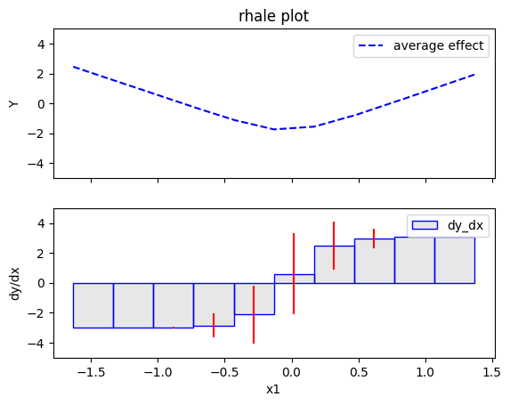
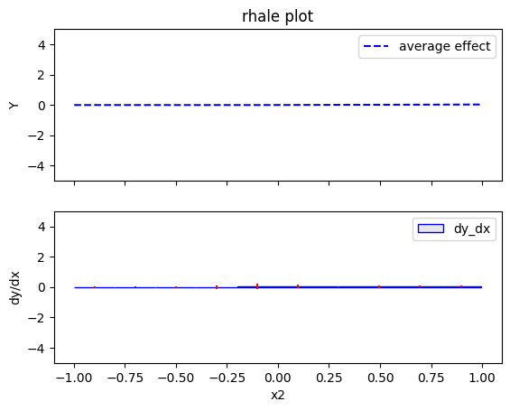
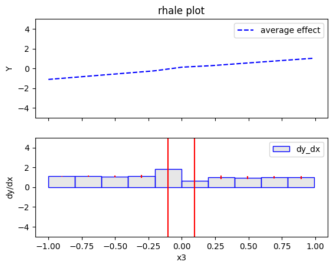
Regional RHALE
regional_rhale = effector.RegionalRHALE(
data=X_cor_train,
model=model_cor,
model_jac= model_cor_jac,
feature_names=['x1', 'x2', 'x3'],
axis_limits=np.array([[-1, 1], [-1, 1], [-1, 1]]).T)
binning_method = effector.binning_methods.Fixed(11, min_points_per_bin=0)
regional_rhale.fit(
features="all",
heter_pcg_drop_thres=0.6,
binning_method=binning_method,
nof_candidate_splits_for_numerical=11
)
100%|██████████| 3/3 [00:00<00:00, 3.65it/s]
regional_rhale.show_partitioning(features=0)
Feature 0 - Full partition tree:
Node id: 0, name: x1, heter: 2.20 || nof_instances: 1000 || weight: 1.00
--------------------------------------------------
Feature 0 - Statistics per tree level:
Level 0, heter: 2.20
regional_rhale.show_partitioning(features=1)
Feature 1 - Full partition tree:
Node id: 0, name: x2, heter: 0.17 || nof_instances: 1000 || weight: 1.00
--------------------------------------------------
Feature 1 - Statistics per tree level:
Level 0, heter: 0.17
regional_rhale.show_partitioning(features=2)
Feature 2 - Full partition tree:
Node id: 0, name: x3, heter: 2.26 || nof_instances: 1000 || weight: 1.00
--------------------------------------------------
Feature 2 - Statistics per tree level:
Level 0, heter: 2.26
Conclusion
SHAP DP
Uncorrelated setting
Global SHAP DP
shap = effector.SHAPDependence(data=X_uncor_train, model=model_uncor, feature_names=['x1', 'x2', 'x3'], target_name="Y")
shap.plot(feature=0, centering=True, heterogeneity="shap_values", show_avg_output=False, y_limits=[-3, 3])
shap.plot(feature=1, centering=True, heterogeneity="shap_values", show_avg_output=False, y_limits=[-3, 3])
shap.plot(feature=2, centering=True, heterogeneity="shap_values", show_avg_output=False, y_limits=[-3, 3])
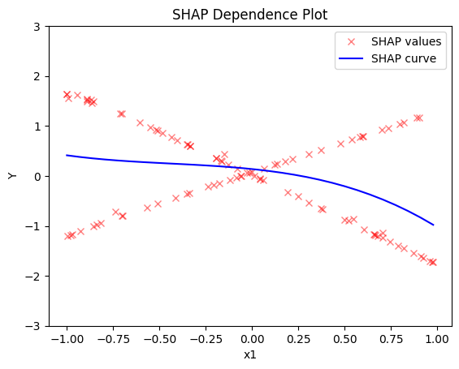
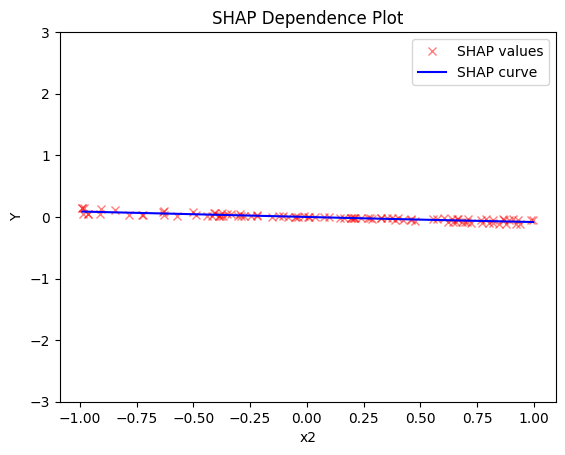
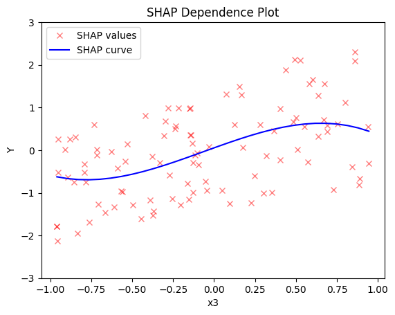
Regional SHAP-DP
regional_shap = effector.RegionalSHAP(
data=X_uncor_train,
model=model_uncor,
feature_names=['x1', 'x2', 'x3'],
axis_limits=np.array([[-1, 1], [-1, 1], [-1, 1]]).T)
regional_shap.fit(
features="all",
heter_pcg_drop_thres=0.6,
nof_candidate_splits_for_numerical=11
)
100%|██████████| 3/3 [00:47<00:00, 15.80s/it]
regional_shap.show_partitioning(0)
Feature 0 - Full partition tree:
Node id: 0, name: x1, heter: 0.78 || nof_instances: 100 || weight: 1.00
Node id: 1, name: x1 | x3 <= -0.01, heter: 0.02 || nof_instances: 58 || weight: 0.58
Node id: 2, name: x1 | x3 > -0.01, heter: 0.04 || nof_instances: 42 || weight: 0.42
--------------------------------------------------
Feature 0 - Statistics per tree level:
Level 0, heter: 0.78
Level 1, heter: 0.03 || heter drop: 0.75 (96.38%)
regional_shap.plot(feature=0, node_idx=1, heterogeneity="std", centering=True, y_limits=[-5, 5])
regional_shap.plot(feature=0, node_idx=2, heterogeneity="std", centering=True, y_limits=[-5, 5])
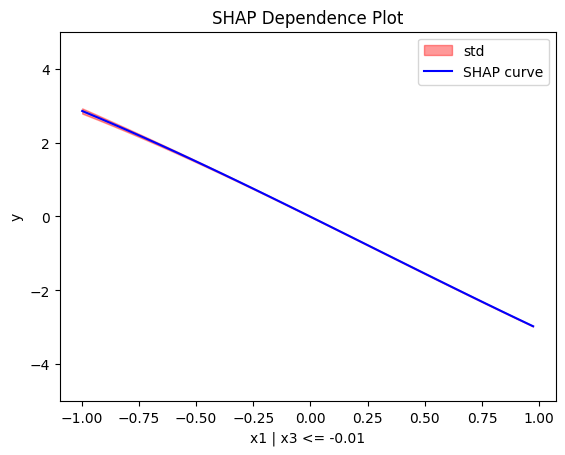
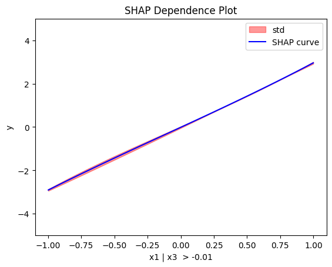
regional_shap.show_partitioning(features=1)
Feature 1 - Full partition tree:
Node id: 0, name: x2, heter: 0.02 || nof_instances: 100 || weight: 1.00
--------------------------------------------------
Feature 1 - Statistics per tree level:
Level 0, heter: 0.02
regional_shap.show_partitioning(features=2)
Feature 2 - Full partition tree:
Node id: 0, name: x3, heter: 0.72 || nof_instances: 100 || weight: 1.00
--------------------------------------------------
Feature 2 - Statistics per tree level:
Level 0, heter: 0.72
Conclusion
Correlated setting
Global SHAP-DP
shap = effector.SHAPDependence(data=X_cor_train, model=model_cor, feature_names=['x1', 'x2', 'x3'], target_name="Y")
shap.plot(feature=0, centering=True, heterogeneity="shap_values", show_avg_output=False, y_limits=[-3, 3])
shap.plot(feature=1, centering=True, heterogeneity="shap_values", show_avg_output=False, y_limits=[-3, 3])
shap.plot(feature=2, centering=True, heterogeneity="shap_values", show_avg_output=False, y_limits=[-3, 3])
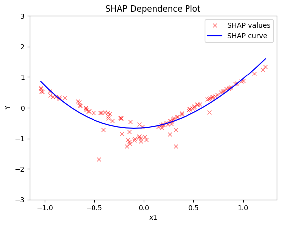
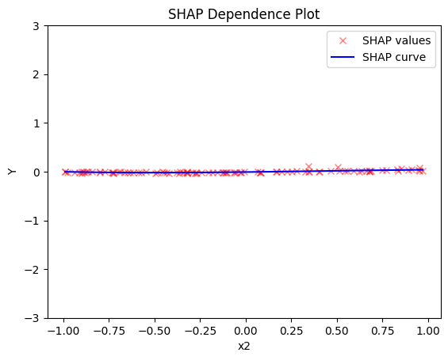
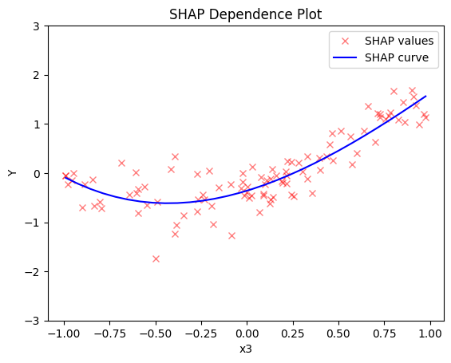
Regional SHAP
regional_shap = effector.RegionalSHAP(
data=X_cor_train,
model=model_cor,
feature_names=['x1', 'x2', 'x3'],
axis_limits=np.array([[-1, 1], [-1, 1], [-1, 1]]).T)
regional_shap.fit(
features="all",
heter_pcg_drop_thres=0.6,
nof_candidate_splits_for_numerical=11
)
100%|██████████| 3/3 [00:46<00:00, 15.62s/it]
regional_shap.show_partitioning(0)
regional_shap.show_partitioning(1)
regional_shap.show_partitioning(2)
Feature 0 - Full partition tree:
Node id: 0, name: x1, heter: 0.17 || nof_instances: 100 || weight: 1.00
--------------------------------------------------
Feature 0 - Statistics per tree level:
Level 0, heter: 0.17
Feature 1 - Full partition tree:
Node id: 0, name: x2, heter: 0.01 || nof_instances: 100 || weight: 1.00
--------------------------------------------------
Feature 1 - Statistics per tree level:
Level 0, heter: 0.01
Feature 2 - Full partition tree:
Node id: 0, name: x3, heter: 0.29 || nof_instances: 100 || weight: 1.00
--------------------------------------------------
Feature 2 - Statistics per tree level:
Level 0, heter: 0.29